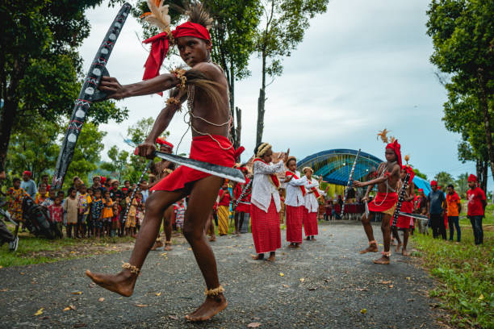

Maluku: The Spice Islands and a Land of Rich History
Maluku, also known as the Moluccas, is an archipelago in eastern Indonesia historically famed as the "Spice Islands." This province is rich in history, diverse cultures, and stunning natural beauty. From its historical forts and ancient traditions to its beautiful beaches and vibrant marine life, Maluku offers a captivating journey through time and nature.
A History Shaped by Spices:
Maluku's history is deeply intertwined with the spice trade, which has shaped its destiny for centuries:
Cultural Diversity and Traditions:
Maluku is home to a diverse population with various ethnic groups and cultural traditions:
Natural Beauty and Marine Biodiversity:
Maluku is blessed with stunning natural beauty both above and below the water:
Economic Potential:
Maluku's economy is supported by:
Maluku offers a unique and unforgettable experience for visitors, combining rich history, diverse cultures, and stunning natural landscapes. Here's a deeper look:
Spice Trade and Colonial Era: The spice trade has significantly shaped Maluku's history, attracting traders and colonizers and leaving a lasting legacy.
Diverse Ethnic Groups and Traditions: The various ethnic groups in Maluku each have their own unique cultural traditions, contributing to the province's rich heritage.
Traditional Arts and Ceremonies: Traditional dances, music, ceremonies, and crafts are important aspects of Maluku's cultural expression.
Beaches, Islands, and Underwater World: Maluku offers beautiful beaches, pristine islands, and rich marine biodiversity, making it a paradise for nature lovers and divers.
Rainforests and Mountains: Some islands in Maluku also offer opportunities for hiking and exploring unique rainforest ecosystems.
Maluku is developing its economy, particularly in the fisheries and tourism sectors, while preserving its rich historical and cultural heritage. Sustainable development and responsible tourism are key priorities for the province.
